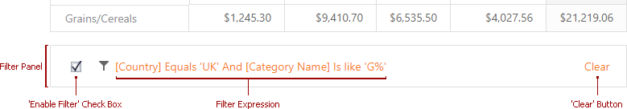

Build Complex Filter Criteria
Use a Filter Editor to build complex filter criteria with an unlimited number of filter conditions, combined by logical operators.
Filter Editor
To invoke the Filter Editor, click an empty space within the Pivot Table header region and select Show Filter from the context menu.

The Pivot Table synchronizes filters applied in Filter Windows and the Filter Editor. You can customize the filter sting or clear it to reset applied filters.
If you use classic mode, a Prefilter is available instead.
Note that the Prefilter does not affect filters applied in Filter Windows.
To invoke the Prefilter, click an empty space within the Pivot Table header region and select Show Prefilter from the context menu.

Filter Panel
After you have built and applied a filter condition, a Filter Panel appears at the bottom of the Pivot Table. This panel displays the filter condition.

The Filter Panel displays a filter expression, a check box used to temporarily enable/disable the filter, and a 'clear' button used to reset the current filter condition.
To modify a filter condition, open the Filter Editor. In the filter panel, click a filter condition to invoke it.
For information on the Filter Editor filtering capabilities, see Filter Editor.